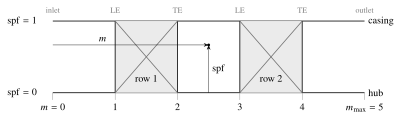

Annulus lines¶
Classes to construct annulus geometry around a mean line design.
An AnnulusDesign describes a family of hub and casing line shapes for
a turbomachine. The design is what is specified in the input file under
annulus:, but is not in itself sufficient to construct
an annulus. Conversely, a MeanLine holds mean radii
and annulus areas, but not axial coordinates or anything about the shape
between stations. To get a complete annulus, we combine a
AnnulusDesign and a MeanLine to produce an
Annulus, which calculates the actual curves for a particular machine.
The Tutorial uses the built-in annulus in a complete design; this page documents the classes in more detail. The mean line an annulus is built against is documented at Mean-line flow field.
Built-in annulus shapes¶
The two annulus shapes that ship with turbigen both define the
annulus lines using cubic splines in arc-length space, as subclasses of
PchipAnnulus, and differ only in how the meridional length of each row
and gap is stated. Both lay their values out over the segments, which alternate
gap, row, gap, row, …, so there are 2 * n_row + 1 of them and the gaps
include the inlet and outlet ducts.
FixedAxialChordstates the axial chord of each row incx_rowand of each gap incx_gap, in metres. Note that this method only works for axial machines.AspectRatiostates the span-to-meridional-chord ratio of each row inAR_rowand of each gap inAR_gap. The aspect ratios are defined with respect to the mean of inlet and outlet spans for each segment. No limit is placed on the pitch angle, so this method works for radial machines.
Two more parameters are configurable:
nozzle_ratioscales the exit span to achieve a desired nozzle area;merge_weightblends the annulus lines towards a curve through the machine inlet and outlet stations alone, instead of constraining the internal stations, to smooth curvature across the machine.
Design process¶
Loading an input file converts its annulus: mapping
into an instance of the AnnulusDesign subclass
named by type. Once the mean line is built,
turbigen passes PchipAnnulus.design() a MeanLine and:
segment_lengths()returns the meridional arc length of every row and gap, given spans and pitch angles;Calculates points for the hub and casing from the mean-line mean radius, span and pitch angle at each station, with straight duct extensions of the required segment length added at inlet and outlet;
PCHIP splines are fitted through the control points in arc-length space iterating until until each segment’s length matches its target;
A second spline fit through the machine inlet and outlet stations alone is made when
merge_weightis non-zero, for the curvature blend.
Finally, the fitted splines are returned in an Annulus. Downstream code
uses Annulus.evaluate_xr() and so on to get the coordinates of any
position in the annulus coordinate system, described next.
Annulus coordinate system¶
An Annulus is addressed by a normalised meridional coordinate m
and a span fraction spf. At the inlet, m=0, then 1 at the first row
leading edge, 2 at its trailing edge, and so on up to
m_max. Span fraction spf runs from 0 at the hub to 1 at the casing.
Annulus.evaluate_xr() maps a pair of them to axial and radial
coordinates.
{kind=link}

Meridional view of a two-row and coordinate system.¶
- turbigen.annulus.CUT_OFFSET = 0.02¶
Cut planes sit this fraction of blade chord into the gap, clear of the row.
Cutting exactly at a leading or trailing edge would put the plane inside the blade, where there is no single annulus-spanning surface to integrate over.
- class turbigen.annulus.RowAnnulus(evaluate_xr_annulus: object, m_LE: float, chord: float)¶
Bases:
objectThe annulus restricted to one blade row.
The full hub-to-casing annulus with the meridional coordinate clamped to one row’s range and renormalised, so
mruns 0 at the leading edge to 1 at the trailing edge. A blade design is handed one of these rather than the whole annulus and a row index, so that the convention mapping a row onto the annulus coordinate stays insideAnnulus, which is the only thing that defines it.- evaluate_xr(m, spf)¶
Return meridional coordinates within the row.
The row-local counterpart of
Annulus.evaluate_xr(), taking its arguments in the same order — but heremruns 0 at the leading edge to 1 at the trailing edge, rather than over the whole annulus. Both take two broadcastable array-likes, so a transposed call would be silent.- Parameters:
m (array_like) – Normalised meridional distance, 0 at the leading edge and 1 at the trailing edge. Broadcast against spf.
spf (array_like) – Span fraction, 0 at the hub and 1 at the casing.
- Returns:
xr – Axial and radial coordinates, stacked on the first axis.
- Return type:
ndarray, shape (2, …)
- class turbigen.annulus.Annulus(s: ndarray, curves: tuple, curves_merged: tuple, merge_weight: float, n_row: int)¶
Bases:
objectHub and casing lines of a designed annulus.
Coordinates are addressed by a normalised meridional coordinate
m, where 0 is the inlet, 1 the first row leading edge, 2 its trailing edge and so on, and a span fractionspfrunning 0 at the hub to 1 at the casing.Frozen, like every other result: an annulus is what the design produced and nothing downstream has any business changing it.
- property n_segment¶
Number of segments, being the rows and the gaps between them.
- property m_max¶
Largest valid value of the normalised meridional coordinate.
- evaluate_xr(m, spf)¶
Return meridional coordinates within the annulus.
- Parameters:
m (array_like) – Normalised meridional distance. Broadcast against spf.
spf (array_like) – Span fraction, 0 at the hub and 1 at the casing.
- Returns:
xr – Axial and radial coordinates, stacked on the first axis.
- Return type:
ndarray, shape (2, …)
- property r_hub¶
Hub radii at all row inlet and outlet stations [m].
- property r_tip¶
Casing radii at all row inlet and outlet stations [m].
- property r_mid¶
Mid-span radii at all row inlet and outlet stations [m].
- property r_rms¶
Root-mean-square radii at all row inlet and outlet stations [m].
- property htr¶
Hub-to-tip ratio at all row inlet and outlet stations [–].
- evaluate_span(m)¶
Return the hub-to-casing distance at meridional position(s) m [m].
- Parameters:
m (array_like) – Normalised meridional distance.
- Returns:
span – Distance from hub to casing at each position [m].
- Return type:
ndarray
- cut_planes(offset=0.02)¶
Return the meridional cut curve at each design station.
A cut plane is the straight hub-to-casing line at one meridional position, so it is two points and needs nothing beyond
evaluate_xr()— which is why it lives here rather than with any one of the things that cut with it. The mean line is reduced between these planes, so a quantity integrated over the same bounds is directly comparable with the loss the mean line reports.- Parameters:
offset (float) – Distance into the adjacent gap, as a fraction of blade chord.
- Returns:
One
(2, 2)array per station, in streamwise order, each holding two(x, r)points, hub then casing. This is the shapeember.cut.unstructured()takes.- Return type:
list of ndarray
- evaluate_chords(spf)¶
Return the meridional chord of every segment at span fraction spf.
Segments alternate gap, row, gap, row, …, gap, so there are
2 * n_row + 1of them.
- extract_row(i_row)¶
Return the annulus of blade row i_row as a
RowAnnulus.Rows occupy the odd segments, so this is where the mapping from a row index onto the annulus meridional coordinate lives, and the only place it does.
- to_string()¶
Tabular string representation of the annulus at row stations.
- class turbigen.annulus.AnnulusDesign¶
Bases:
NodeSpecify the shape of an annulus around a given mean line.
The Annulus lines page covers the shapes that ship with turbigen and how a design is run.
- class turbigen.annulus.PchipAnnulus(*, nozzle_ratio: float = 1.0, merge_weight: float = 0.0)¶
Bases:
AnnulusDesignHub and casing lines fitted as PCHIP curves in arc-length space.
Everything about the fit is here: the control points placed from the mean line, the arc-length iteration, the duct extensions, the nozzle scaling and the merge blend. A member supplies one thing,
segment_lengths(), and that is the whole difference between the designs below.Deliberately not selectable — it declares no
type, so it is not in the registry and cannot appear in a config file. It is the shared body of two designs, not a third one.- merge_weight: float = 0.0¶
Blend towards a curve fitted through the endpoints only [–].
At 0 the hub and casing pass through every station. At 1 they follow a curve fitted through the first and last segments alone, which smooths curvature across the rows at the cost of missing the intermediate stations. Values between blend the two.
- segment_lengths(span_avg, cos_Beta_avg)¶
Return the meridional arc length of each segment [m].
Arc length rather than axial length, because it is what both the parameterisation and the duct extensions are measured in; the axial length follows from the pitch angle. A design that states axial chords divides by cos_Beta_avg to get here, and one that states aspect ratios never needs it at all.
- design(mean_line)¶
Return the annulus this design describes for mean_line.
- class turbigen.annulus.FixedAxialChord(*, nozzle_ratio: float = 1.0, merge_weight: float = 0.0, cx_row: tuple[float, ...], cx_gap: tuple[float, ...])¶
Bases:
PchipAnnulusAnnulus with a prescribed axial chord for each row and gap.
Note that an axial chord cannot describe a segment at 90 degrees pitch angle, so this method does not work for radial machines.
- cx_gap: tuple[float, ...]¶
Axial chord of each gap, including the inlet and exit ducts [m], length n_row + 1.
- segment_lengths(span_avg, cos_Beta_avg)¶
Return the meridional arc length of each segment [m].
Arc length rather than axial length, because it is what both the parameterisation and the duct extensions are measured in; the axial length follows from the pitch angle. A design that states axial chords divides by cos_Beta_avg to get here, and one that states aspect ratios never needs it at all.
- class turbigen.annulus.AspectRatio(*, nozzle_ratio: float = 1.0, merge_weight: float = 0.0, AR_row: tuple[float, ...], AR_gap: tuple[float, ...])¶
Bases:
PchipAnnulusAnnulus with a prescribed span-to-chord ratio for each row and gap.
The chord is meridional, and the span it is measured against is the mean of the inlet and outlet spans of each segment.
- AR_gap: tuple[float, ...]¶
Span-to-meridional-chord ratio of each gap, including the inlet and exit ducts [–], length n_row + 1.
- segment_lengths(span_avg, cos_Beta_avg)¶
Return the meridional arc length of each segment [m].
Arc length rather than axial length, because it is what both the parameterisation and the duct extensions are measured in; the axial length follows from the pitch angle. A design that states axial chords divides by cos_Beta_avg to get here, and one that states aspect ratios never needs it at all.